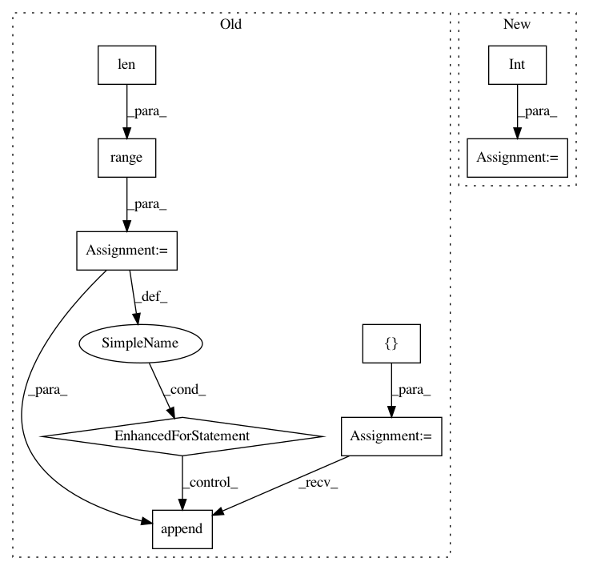

04573605a3bef45d29d81302bce154f220bbd7f5,finetune/target_encoders.py,OrdinalRegressionEncoder,rank_to_thresholds,#OrdinalRegressionEncoder#Any#,125
Before Change
def rank_to_thresholds(self,x):
//changes a one-variable rank into an array of 1s and 0s defining the target output of each threshold
num_thresholds = len(self.categories_[0])-1
thresholds = []
//print("NUM: {}".format(num_thresholds))
//print("RANK: {}".format(x[0]))
for i in range(len(x)):
rank = int(x[i])
thresholds.append(np.concatenate((np.ones(rank,),np.zeros((num_thresholds-rank),))))
return thresholds
def inverse_transform(self, y):
y = super().inverse_transform(y)
After Change
//changes a one-variable rank into an array of 1s and 0s defining the target output of each threshold
x = x[:10000]
num_thresholds = len(self.categories_[0])-1
thresholds = [np.concatenate((np.ones(int(rank)),np.zeros((num_thresholds-int(rank))))) for rank in x]
return np.array(thresholds)
def inverse_transform(self, y):
//this commented part doesn"t work yet
In pattern: SUPERPATTERN
Frequency: 3
Non-data size: 9
Instances
Project Name: IndicoDataSolutions/finetune
Commit Name: 04573605a3bef45d29d81302bce154f220bbd7f5
Time: 2019-01-15
Author: matthew.bayer@indico.io
File Name: finetune/target_encoders.py
Class Name: OrdinalRegressionEncoder
Method Name: rank_to_thresholds
Project Name: kengz/SLM-Lab
Commit Name: 96071811df8e9a91539c993ab9983f2b445a1b6a
Time: 2019-05-25
Author: kengzwl@gmail.com
File Name: slm_lab/env/__init__.py
Class Name: EnvSpace
Method Name: __init__
Project Name: r9y9/wavenet_vocoder
Commit Name: 2a094e6fb2c8563e72f5b5a703951e5edcc673f3
Time: 2017-12-31
Author: zryuichi@gmail.com
File Name: train.py
Class Name:
Method Name: